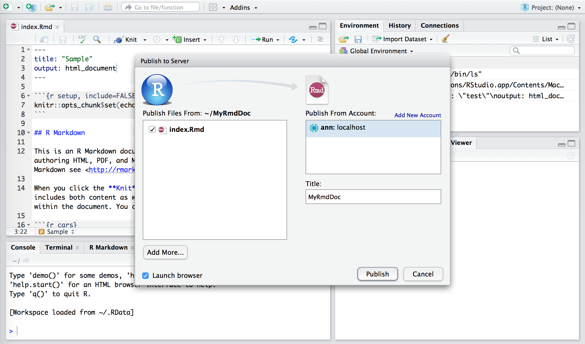
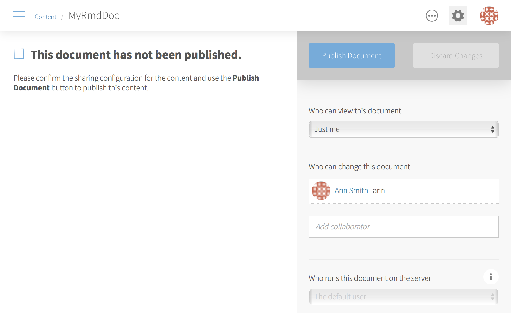
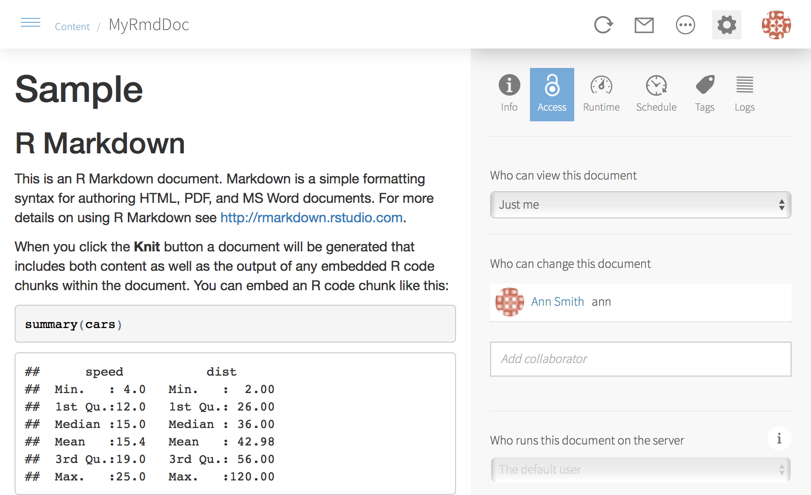
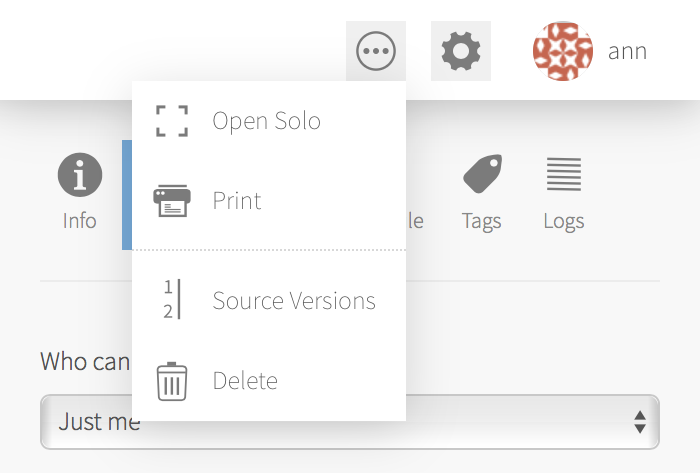
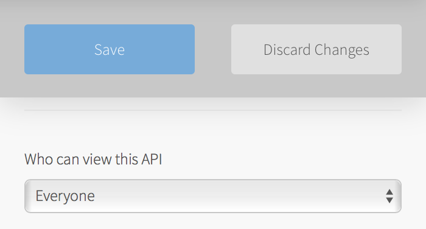
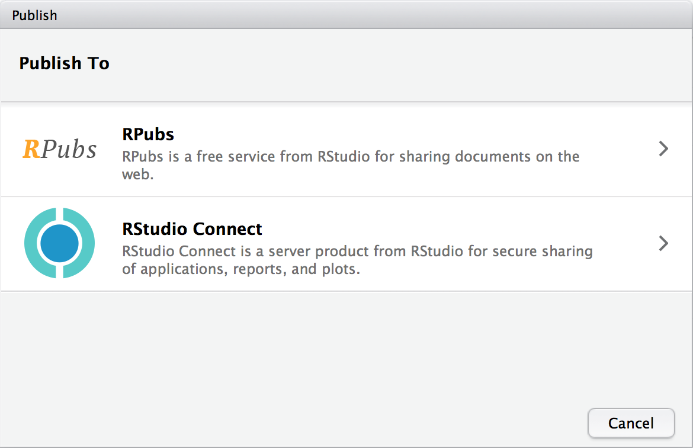
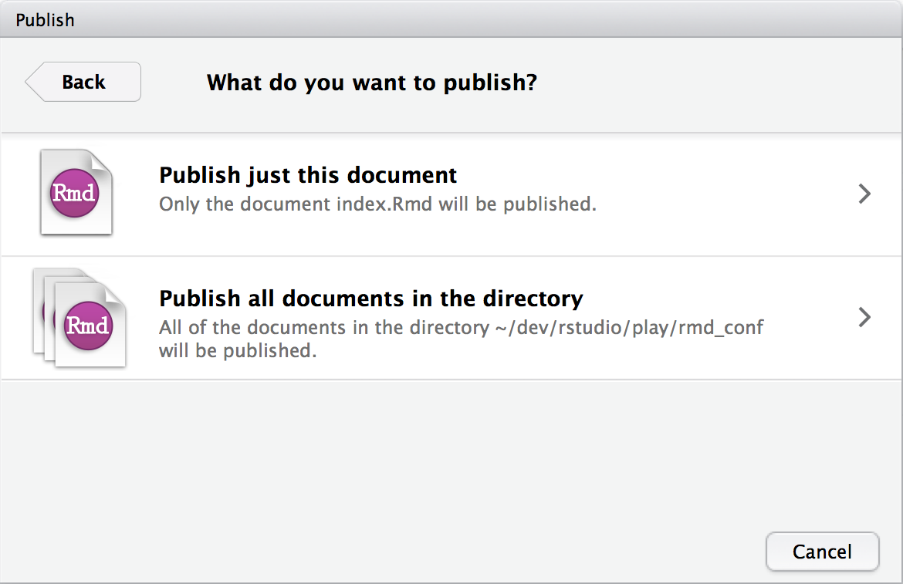

3 Publishing
Be sure to configure your Connect account before attempting to publish with the RStudio IDE. See Section 2 for information on configuring your Connect account
3.1 Publishing Instructions for All Content Types
RStudio Connect accepts Shiny applications, R Markdown documents, as well as plots and graphs. The blue publishing icon in the RStudio IDE indicates that a particular piece of content can be published.

You can find the blue publishing icon at the following locations:
- The upper right of the file editor
- The document viewer when viewing a document
- The embedded viewer when running a Shiny application
- The plots pane
Click on this icon to open a publishing dialog where you can name your content and select additional files to include in the deployment. By default, RStudio will try to infer the data files and scripts are used in your application. This window lets you refine those file selections. 
Most of the time, RStudio is able to determine automatically which files are needed to render your document on Connect. However, there are situations in which it will miss a file (for instance, if it isn’t referenced directly in your document). The Add More… button lets you add files to the bundle that will be sent to Connect so that they will be available on the server when your document is rendered. You can also use the resource_files field in your document’s YAML header to add additional files.
Deployed data files must be in the same directory as your Shiny application or R Markdown document. Files stored elsewhere on your computer (C:\Users\me\mydata.csv) will not be available on the remote server.
Click Publish after verifying your settings.
Your first deployment may take a few minutes, as Connect attempts to recreate the R library you use locally – referenced packages are downloaded and installed. These packages are cached on the server; subsequent deployments will be faster.
Not all of your IDE environment can be replicated on the server. Different operating systems or versions of R can occasionally make applications behave differently. Package installation failures may require the installation of additional system libraries.
When the deployment completes, you’ll be taken to the application’s settings page in RStudio Connect. 
This page lets you verify the sharing and visibility of your content. Click Publish to confirm these settings.
Content cannot be viewed until it is published.

You should now see your deployed content – a rendered version of the document or a live instance of your Shiny application. The content is displayed within the context of RStudio Connect, and you are able to further configure settings for your content.
3.1.1 Publishing Plumber APIs
Plumber APIs have the following known restrictions:
- Push-button publishing from the IDE is not supported
- Server-side latency is not tracked
To get started with publishing Plumber API endpoints, create a directory with a plumber.R file defining your endpoints. From the console, execute the following, replacing <project-dir> with your project’s directory:
> rsconnect::deployAPI(api = '<project-dir>')Once live, the content view will show you the results of your @get / endpoint. If @get / is not defined, you will see a “Swagger UI” presentation of your API. Swagger is an API documentation format; Plumber can automatically generate a swagger.json definition for your API by inspecting your endpoints. The “Swagger UI” page offers an interactive portal into your API that allows you to test your endpoints directly from the browser.
To make a call to your new API yourself, you’re going to need the target URL. You can find it by looking at the bottom of the Access tab in your API’s settings, or by clicking the ... menu in the upper-right of the content view and select “Open Solo”.

The location should look like the following:
https://example.com/content/42/All calls can be made relative to this path. For example, if you want to make a request to /volcano, the location in the above example would be https://example.com/content/42/volcano, like so:
curl -XPOST https://example.com/content/42/volcano --data-binary '{ "line_plot": true }'If your API restricts access to a particular set of users, then Connect will require that incoming requests authenticate the user making the request. The best approach for authenticating a request targeting an API is to use API Keys 4.
Alternatively, if your server is configured to use proxy authentication, you should ask your IT Administrator about ways to make API calls through that proxy.
If you want to perform access control in your Plumber API itself, or if you want to allow anyone to access your API, open the application settings, then the “Access” tab, and set “Who can view this API” to “Everyone”.

A simple way to control access might be like the following:
#* @filter shared-secret-auth
keyAuth <- function(res, secret = NULL) {
if(is.null(secret) || secret != 'mySecret') {
res$status <- 401 # 401 UNAUTHORIZED
list(error = "Authentication Failed")
} else {
plumber::forward()
}
}See the Plumber documentation for more information on @filter methods, and how they can be skipped in your route with @preempt.
Security is hard. The example above might be good enough for some purposes, but is unsuitable in cases where you need multiple keys you can invalidate arbitrarily. In those cases, API Keys 4 would be preferable. Ask your IT Administrator for guidance if you need help choosing a suitable authentication scheme.
3.2 Publishing Options for Documents
When publishing documents to RStudio Connect, you may encounter other deployment options depending on your content. These options are discussed below.
3.2.1 Publishing Destination
 RPubs is a service for easily sharing R Markdown documents. RPubs is not related to Connect, and you should always choose “RStudio Connect” if you wish to publish your content to Connect.
RPubs documents are (1) always public, (2) always self-contained, and (3) and cannot contain any Shiny content. You will see the choice to publish to RPubs if your document is self-contained and does not require Shiny. Some organizations want to prohibit publishing to RPubs to reduce the chance that sensitive data will be accidentally made public; publishing to RPubs (and shinyapps.io) can be disabled if desired using an RStudio Server option.
3.2.2 Publish Source Code
publish source code?
You will see these options when publishing from the document viewer.
Publishing the document with source code means that your R Markdown file (.Rmd) will be deployed to RStudio Connect. This file is rendered (usually to HTML) on the server.
Publishing only the finished document means that the HTML file you rendered locally is deployed to RStudio Connect.
We recommend publishing your documents with source code, as it allows you to re-render the document with RStudio Connect (on a weekly schedule, for example). If the document cannot be rendered by RStudio Connect because of files or data sources that are unavailable on the server, choose “Publish finished document only” so others can view your work.
3.2.3 Document Selection
 You will see these options when publishing an R Markdown document from a directory that contains more than one R Markdown document. It is possible to link together multiple R Markdown documents to make a multi-page document, so this is your chance to indicate that you’ve done this, and to publish all the documents at once. In most cases however you’ll want to publish just the current document.